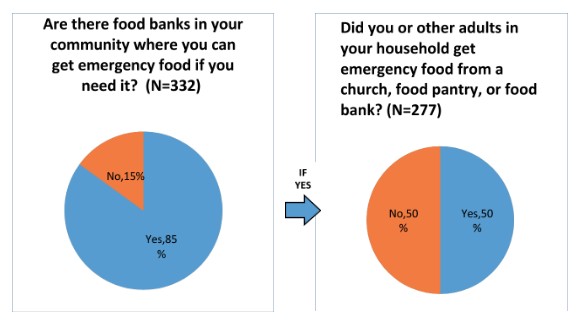
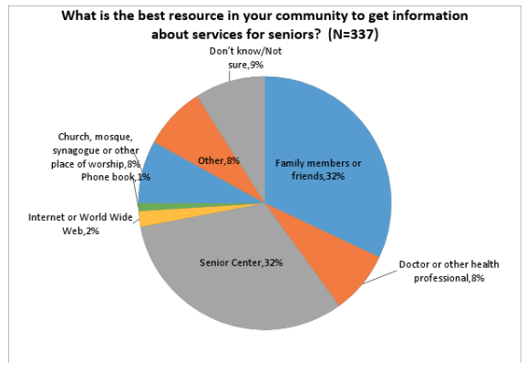
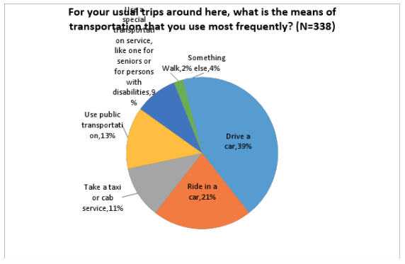
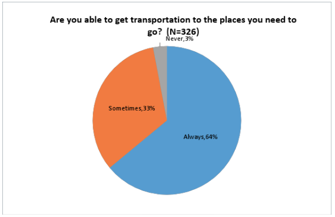

The AdvantAge Initiative in Action
The United Way of Greater Union County, Plainfield, NJ
Two foundations that provide grants to New Jersey-based organizations—The Grotta Fund for Senior Care and the Henry and Marilyn Taub Foundation—joined forces in 2015 to initiate a 3-year grant program to help some New Jersey communities become more “aging-friendly.” The grantees of the program initially received planning grants, which they were to use to collect information about their communities and the older adults who live in them. This information would form the basis of a work plan that the grantees would develop and include in their subsequent project implementation proposals to the two foundations.
One of the Grotta Fund’s grantees—the United Way of Greater Union County (UWGUC)—contacted the VNSNY Research Center about conducting a survey of older adults living in Plainfield, one of the towns in Union County. Because UWGUC’s budget was small, it wasn’t enough to cover a randomized telephone survey. But the AdvantAge Initiative team had developed an online and paper version of the AdvantAge Initiative survey specifically for organizations with limited budgets. UWGUC selected that option and, in addition, the AdvantAge team agreed to conduct several focus groups with seniors and service providers in the community to supplement the online/paper survey.
Between March and September of 2016, we received a total of 317 surveys completed in English and 30 completed in Spanish, for a total of 347 completed surveys from Plainfield residents aged 62+. Nine percent (9%) of respondents were between 62 and 64 years of age; 43% were between 65 and 74; 35% were 75 to 84; and 13% were 85+. Sixty-nine (69%) of respondents said that they were Black or African-American; 16% were White; 3% were American Indian or Alaska Native; 1% said they were Asian; and 16% said that they were “Other.” A total of 18% of respondents said that they were Hispanic or Latino.
After analyzing the survey and conducting several focus groups in the community, we found that the survey and focus group findings converged on three key issues for older adults in the community:
- Difficulty accessing fresh, affordable food

- Difficulty accessing information, particularly about transportation options and availability of services

- Difficulty finding affordable and convenient transportation options, particularly to access health care and food shopping


UWGUC chose the name “Lifelong Plainfield” for their aging-friendly project, communicating the idea that Plainfield is a community for people of all ages. In their project implementation proposal, UWGUC chose to address the three key issues in various ways, and have had several successes so far. In the first project implementation year, for example, UWGUC worked with community partners—including faith-based organizations; Springpoint Senior Living, a local provider of affordable housing and CCRCs (Continuing Care Retirement Communities); and local farmers—to expand access to fresh produce for over 200 senior housing residents and add two additional days per month of food delivery to other seniors in the community.
To help increase access to information for older adults, UWGUC developed a directory of services that is being distributed to provider organizations and other community members, and United Way is expanding its 211 information line, which will hopefully become a “go-to” information resource for older adults and their families. UWGUC is also in the process of studying Plainfield’s transportation system and will partner with transportation providers in Union County to find ways to increase access to transportation for Plainfield seniors.
Every organization involved in aging-friendly community projects sooner or later encounters challenges, and UWGUC is no different in that respect. UWGUC did not have a pre-existing presence in Plainfield (UWGUC headquarters are located in Elizabeth, NJ) so the organization realized soon after initiating their project that it needed to cultivate relationships with people who live and work in Plainfield to gain their support for the Lifelong Plainfield project. Having buy-in from the elected and appointed officials in Plainfield, provider organizations, housing providers, the Union County Division on Aging, the faith community, seniors themselves and other interested parties is essential to the success of the project. Thus forging relationships with these community members has become a priority for UWGUC and the Lifelong Plainfield initiative.
There has been another complicating factor for the Lifelong Plainfield project that UWGUC did not expect. There is a growing Latino population in the community that does not yet seem to be integrated into the life of the larger community. UWGUC staff found, for example, that virtually none of the materials available for older adults and other community members are translated into Spanish. So in addition to conducting the Lifelong Plainfield project, the staff has taken on the task of getting important information translated into Spanish and disseminating that information to the Latino community. Recognizing that the Latino population is attached to their churches, UWGUC has made a point of meeting with the Latino faith community to get their buy-in and recommendations for making Lifelong Plainfield more inclusive. UWGUC will continue to work on the three key issues in 2017 and 2018 and the challenges that they have encountered along the way. The AdvantAge Initiative team will continue to update Lifelong Plainfield successes and challenges as UWGUC and partners continue to implement their work plan.